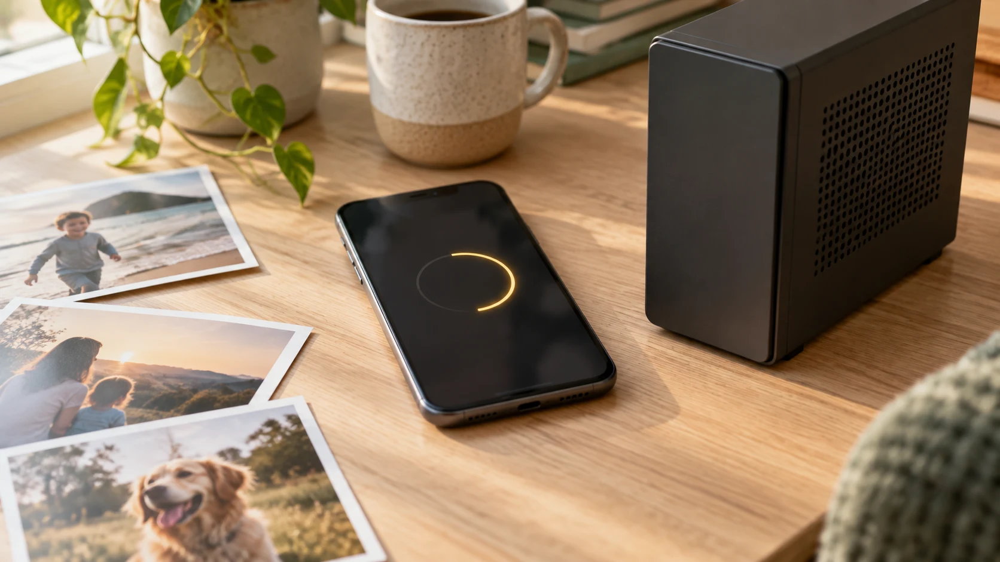

Give your phone its space back. Space Saver quietly moves your photos, videos and files to the home computer running your Beebo Entertainment server — so your camera roll stops eating your storage, and everything lands on a drive you own.
Built in, in beta. Space Saver is part of the Beebo Entertainment app today and is still being tested on real phones — open the app, sign in to your server, and tap Space Saver to start. Here’s how it works.
Photos and videos are what fill a phone. Space Saver offloads them to your home computer, so you get your storage back without deleting your memories.
Everything goes to the same home computer that runs your Beebo Entertainment server — your hardware, your files, no monthly cloud bill.
Not just the camera roll — documents and other files too, tidied off your phone and kept safe at home.
Like the rest of Beebo Entertainment, it moves your files between your phone and your own machine — not through anyone else’s cloud.
Space Saver lives right inside the Beebo Entertainment app, signed in to your own server — the same login you watch with.
Choose your camera roll, downloads, or any folders and files you want off your phone. Beebo scans them and shows how much space you'll get back.
Beebo copies everything to your home computer and keeps going with the app closed. It sticks to Wi-Fi by default, so it never touches your mobile data — and if you'd rather it ran everywhere, there's a setting to allow mobile data too.
Nothing is ever deleted automatically. Only files your home computer has confirmed it holds can be cleared from the phone, and only when you choose to. And you don't have to take our word for it — everything you've moved is viewable in Beebo itself, so you can open your old photos and videos right there and see with your own eyes that they arrived. Your past stays in the present, rather than vanishing into a backup you never look at.